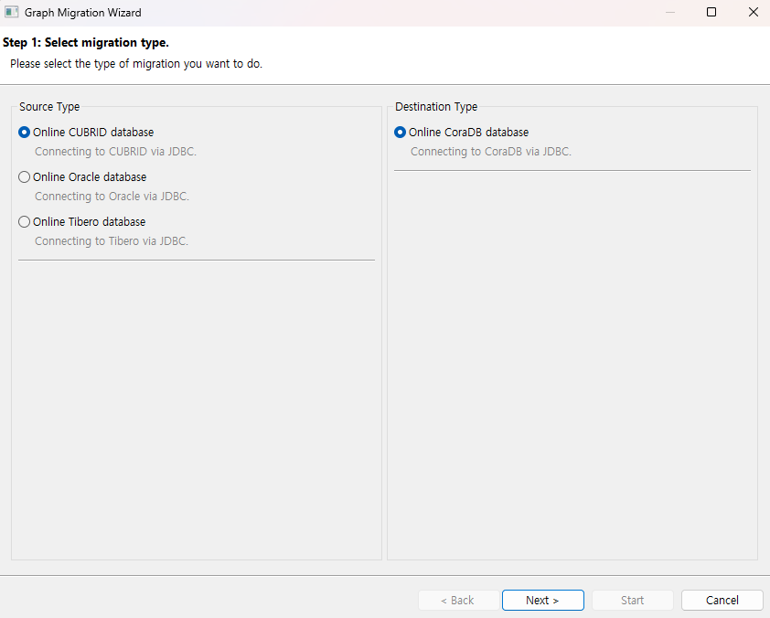
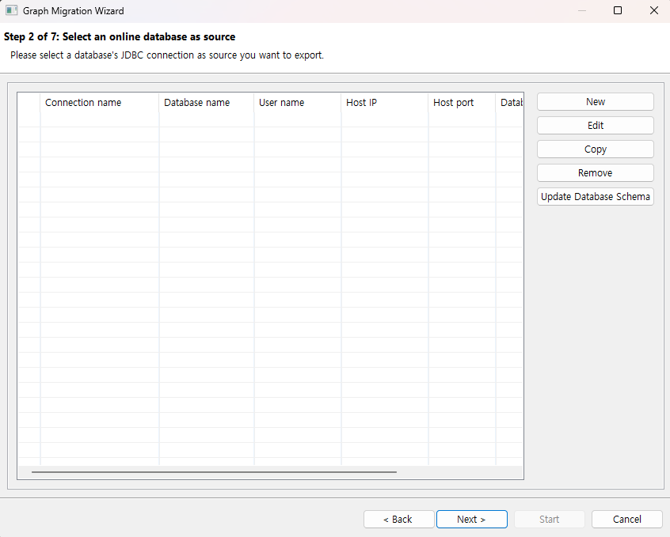
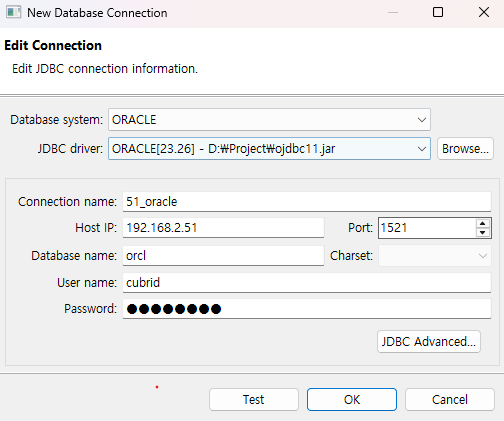
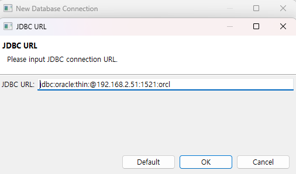

시작하기¶
본 프로그램을 처음 사용하는데 참고할 수 있는 간략한 사용법을 설명한다.
원본 DB 연결 관련¶
원본 DB에 연결 하기 위한 과정을 소개한다.
이관 타입 선택¶

이관을 실행하기 위해 ‘새 그래프 마이그레이션’ 버튼을 선택하면 표시되는 화면.
source type¶
화면의 왼쪽 영역에 해당하는 부분이다.
target으로 이관할 데이터를 가져올 source를 선택하는 부분이다.
현재 선택 가능한 DBMS는 CUBRID, Oracle, Tibero가 있다.
destination type¶
화면의 오른쪽 영역에 해당하는 부분이다.
target의 출력을 어떻게 할 것인지 설정하는 부분이다.
현재는 Onlne CoraDB만 지원한다.
연결 선택¶
원본DB의 connection을 관리한다.

미리 생성된 연결을 선택하거나 유효한 연결을 새로 생성하여 선택한 뒤 대상DB 선택 페이지 또는 다른 설정 페이지로 진행할 수 있다.
연결 생성¶
connection을 생성한다

데이터베이스 종류¶
현재 선택된 데이터베이스의 타입을 나타낸다. 현재 원본 DB는 CUBRID, Oracle, Tibero가 있다.
JDBC 드라이버 선택¶
찾아보기를 눌러 JDBC 드라이버를 추가할 수 있다. 만약 한번 진행 했을 경우 dropbox 메뉴를 통해 기존에 사용했던 JDBC를 사용할 수 있다. CUBRID JDBC는 미리 추가 되어 있으며 Oracle, Tibero는 다운로드 후 추가하여 사용하여야 한다. Oracle에 경우 연결시 ojdbc버전에 따라 orai18n.jar 관련 오류가 발생하는 경우 선택 된 jdbc와 동일한 경로에 다운로드 후 동일한 폴더에 복사 후 프로그램을 재시작하여 다시 연결하면 오류를 해결 할 수 있다.
연결 이름¶
원본 DB 선택 페이지에서 보여질 이름을 입력할 수 있다.
호스트 주소¶
원본 DB가 있는 IP주소를 입력한다.
연결 포트¶
DB의 포트 번호를 입력한다. 기본값은 CUBRID의 기본 포트인 33000으로 되어있다. (Oracle의 경우 1521, Tibero의 경우 8629)
데이터베이스 이름¶
원본 DB 내부의 스키마 또는 DB 이름을 입력한다. (e.g. CUBRID의 샘플 DB인 demodb, Orcale에 경우 ORCL)
문자 집합¶
원본 DB에서 사용중인 인코딩 타입을 설정한다. CUBRID가 지원하는 인코딩 타입은 아래와 같다. Oracle, Tibero에 경우 자동 설정되므로 지원하지 않는다.
UTF-8(기본)
MS949
ISO-8859-1
EUC-KR
EUC-JR
GB2312
GBK
사용자 이름¶
DB에 접속하기 위한 계정 이름을 입력한다.
비밀번호¶
계정의 비밀번호를 입력한다.
JDBC 고급 설정¶
JDBC URL을 커스텀 할 수 있다. 만약 DB연결시 parameter가 필요할 경우 해당 옵션에서 사용할 수 있다.

테스트¶
입력된 정보를 통해 연결을 테스트한다.

RDB to GDB¶
각 이관 기능 별 세부 사항은 다음을 참고한다.